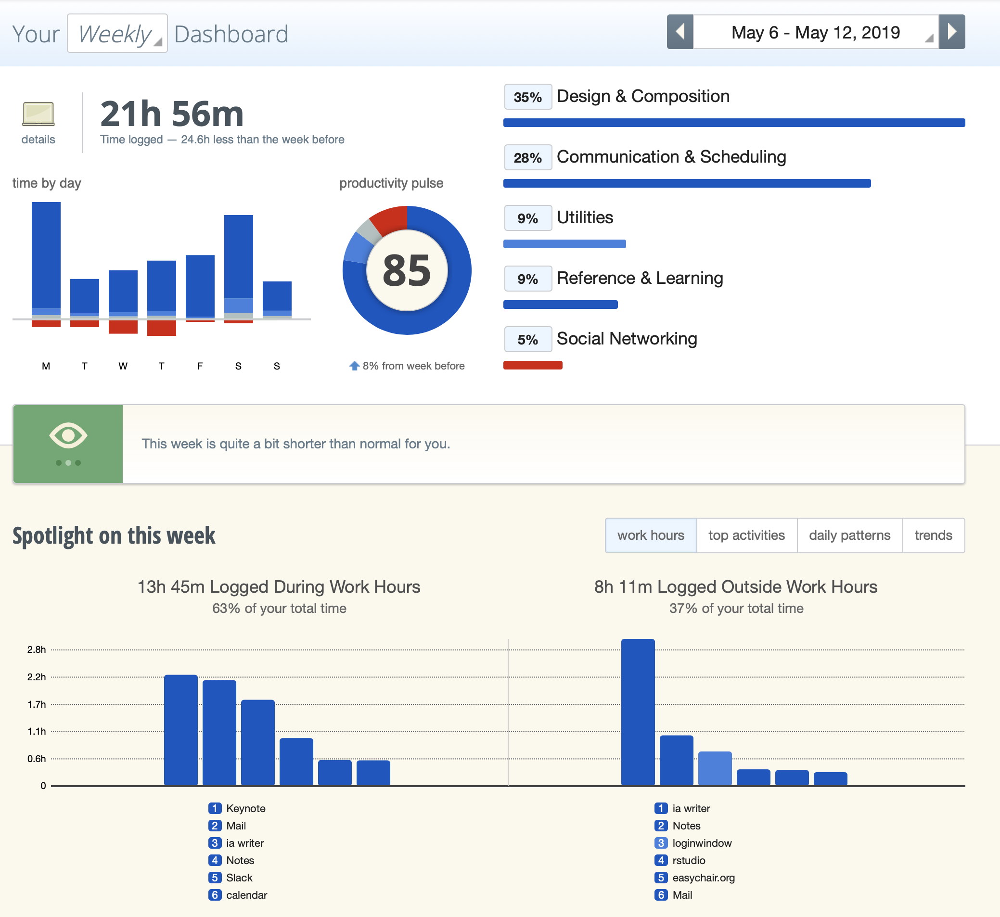
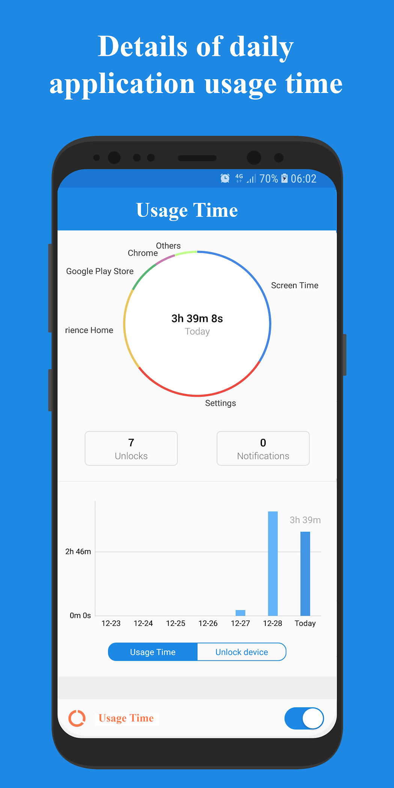
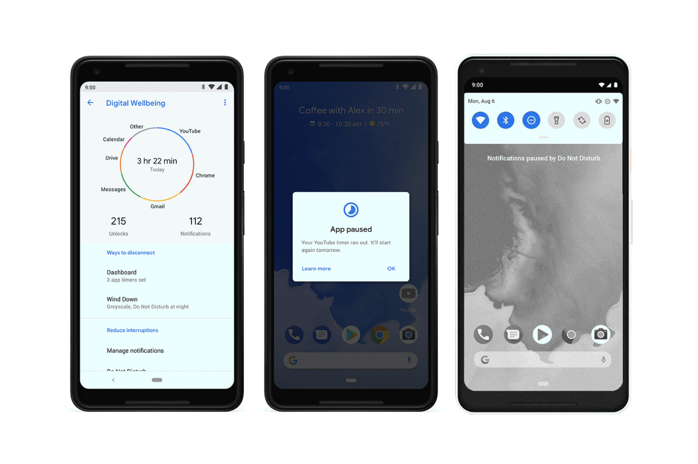
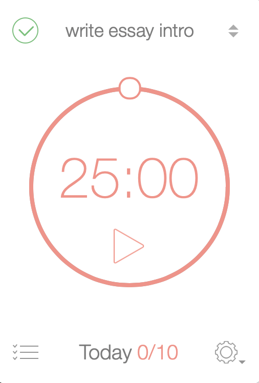
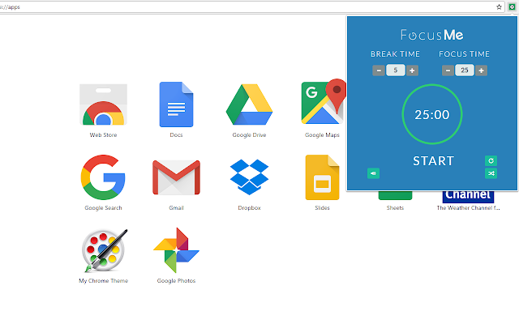

Various tools are available to see how your spend time on your devices, and compare it to your goals.
On laptop, one of the most popular tools is RescueTime:

On Android, apps such as Usage Time provide the same functionality:

Google provides the same functionality with Digital Wellbeing, which is pre-installed on many newer Android devices (Settings > Digital Wellbeing):

To keep you on track, many people track themselves with a countdown timer. This is often done with the ‘Pomodoro’ technique, where you break your work down in intervals, typically 25 minutes, separated by short breaks.
Numerous tools support this, for example Be Focused:

You can combine this with blocking distracting websites during work sessions, for example using the Chrome extension FocusMe:
